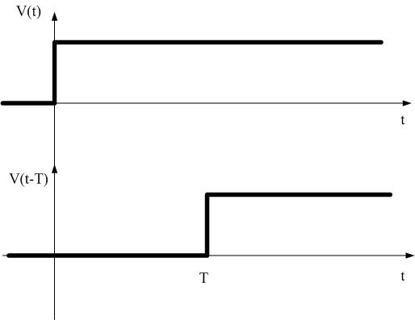
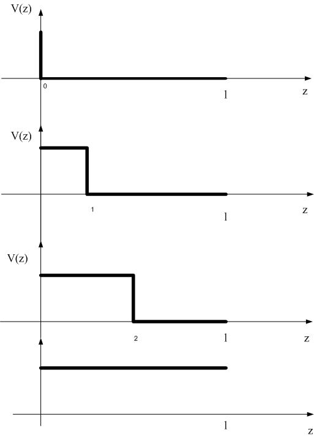
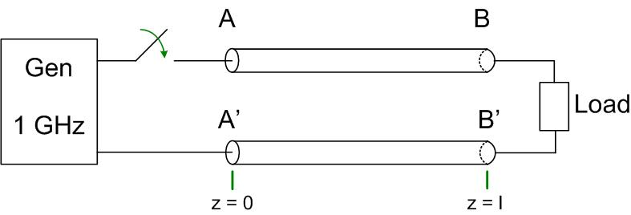

Any wire, cable or line that guides energy from one point to another is a transmission line. Whenever you make a circuit on a breadboard, every wire you attach makes a transmission line with the ground wire. Whether we see the propagation (transmission line) effects on the line depends on the line length. At lower frequencies or very short line lengths we do not see any difference between the signal’s phase at the generator and at the load, whereas at higher frequencies we do.
Figure timedelaysig shows a step voltage at the generator and the load of a circuit in Figure elcric. The voltage needs T sec to appear at the load, once the switch closes. Figure delayedsig shows the step signal as it traveles on the transmission line at different time steps t=0, t=T/4, t=T/2 and t=T. How much time it takes for this signal to go from AA’ end to BB’ end? Since electromagnetic waves propagate with the constant speed, the speed of light, time that the signal needs to go from the generator to the load depends on the length of the transmission line . , where . If the signal at the generator AA’ is



Then at the other end the transmission line the signal is
Since we know that angular frequency is
The quantity is called the wavelength .
The quantity is the propagation constant
Finally the expression for the voltage at BB end is
We see that at BB’ the signal will experience a phase shift. We will derive this equation again later from the Telegrapher’s equations. Now let’s see how the length of the line affects the voltage at the end BB’. Look at Equation tllength1. The signal will experience a phase shift of . If this phase shift is small, there will not be much difference between the phase of the signal at the generator and at the load. This means that we don’t have to use transmission line theory to account for the effects of the line. If the phase shift is significant, then we do have to use the transmission line theory. Let’s look at some numbers in the following example.
Coax, two wire line, microstrip etc can be approximated as TEM up to the 30-40 GHz (unshielded), up to 140 GHz shielded.
Transmission lines that we are discussing here cary TEM fields.
In this section we will derive the expression for voltage and current along a transmission line. This expression will have two variables, time and space . So far we have only seen voltages and currents as a function of time. This is because all circuit elements seen so far were lumped elements. In distributed systems we want to derive the equations for voltage and current for the case when the transmission line is longer then the fraction of a wavelength. To make sure that we don’t encounter any transmission line effects to start with, we can look at the piece of a transmission line that is much smaller then the fraction of a wavelength. In other words we cut the transmission line into small pieces to make sure there are no transmission line effects, as the pieces are shorter then the fraction of a wavelength. We then represent each piece with an equivalent circuit as shown in Figure lineeqc (a). To derive expressions for current and voltage on transmission line we will use the following five-step plan
Let’s follow the plan now. Look at a small piece of a transmission line and represented it with an equivalent circuit. What is modeled by the circuit elements?
Write KVL and KCL equations for the circuit above.
KVL
KCL
Rearrange the KCL and KVL Equations te1kvl1, te1kc11 and divide them with . Equations te2kvl1, te1kc21. let and recognize the definition of the derivative Equations, te2kvl111, te1kc211.
KVL
KCL
We just derived Telegrapher’s equations in time-domain:
Telegrapher’s equations are two differential equations with two unknowns, , . It is not impossible to solve them, however we would prefer to have linear equations. We then express time-domain variables as phasors.
Where are the voltage and current anywhere on the line, and depend on the position on the line . And we get the Telegrapher’s equations in phasor form
Two equations, two unknowns. To solve these equations, we first take a derivative of both equations with respect to z.
Rearange the previous equations:
Substitute Eq.te51 into Eq.te121 and Eq.te61 into Eq.te11 and we get
Or if we rearrange
The above Eq.we11 and Eq.we21 are called the wave equation, and they represent current and voltage wave on a transmission line. is the complex propagation constant. This constant has a real and an imaginary part.
where is the attenuation constant and is the phase constant.
The general solution of the second order differential equations with constant coefficients Equations we11 - we21 is:
In this equation and are the phasors of forward and reflected voltage waves at the load (where z=0), and and are the phasors of forward and reflected current wave at the load (where z=0).These voltages and currents are also phasors and have a constant magnitude and phase in a specific circuit, for example , and . The time domain expression for the current and voltage on the transmission line we can get by multiplying the phasor of the voltage and current with and taking the real part of it.
We’ll look at the Matlab program the next class to see that if the signs of the and are the same the wave moves in the forward direction. If the signs of and are opposite, the wave moves in the direction.
We will show next that if the signs of the and are the same, as in Equation bck1, the wave moves in the forward direction. If the signs of and are opposite, as in Equation fwd1, the wave moves in the direction. In order to see this, we will visualize Equations fwd1 and bck1 using Matlab code below.
Figure fwrdref shows forward and reflected waves on a transmission line. On x-axis is the spatial coordinate from the generator to the load, where the transmission line is connected, and on y-axis is the magnitude of the voltage on the line. The red line on both graphs is the voltage signal at a time .1 ns. We would obtain Figure fwrdref if we had a camera that can take picture of voltages, and we took the first picture at .1 ns on the entire transmission line. The blue dotted line on both graphs is the same signal .1 ns later, at time .2 ns. We see that the signal has moved to the right in the time of 1 ns, or from the generator to the load. On the bottom graph we see that at a time .1 ns, the red line represents the reflected signal. Dashed blue line shows the signal at a time .2 ns. We see that the signal has moved to the left, or from the load to the generator.
clear all
clc
f = 10^9;
w = 2*pi*f
c=3*10^8;
beta=2*pi*f/c;
lambda=c/f;
t1=0.1*10^(-9)
t2=0.2*10^(-9)
x=0:lambda/20:2*lambda;
y1=sin(w*t1 - beta.*x);
y2=sin(w*t2 - beta.*x);
y3=sin(w*t1 + beta.*x);
y4=sin(w*t2 + beta.*x);
subplot (2,1,1),
plot(x,y1,’r’),...
hold on
plot(x,y2,’--b’),...
hold off
subplot (2,1,2),
plot(x,y3,’r’)
hold on
plot(x,y4,’--b’)
hold off
Using matlab code above, repeat the visualization of signals in the previous section for a lossy transmission line. Assume that Np, and all other variables are the same as in the previous section. How do the voltages compare in the lossy and lossless cases?
In equations eq4-eq5 and are the phasors of forward and reflected going voltage waves, and and are the phasors of forward and reflected current waves. In this section, we will see how the phasors of forward and reflected voltage and current waves are related to transmission line impedance.
When substitute the voltage wave equation into Telegrapher’s Equations te11. The equation is repeated here Eq.te12new-te12new1.
We now rearrange Eq.te12new1
Now we compare Eq.eq3 with the Eq.eq5. In order for two transcendental equations to be equal, the coefficients next to exponential terms have to be the same.
We can define the characteristic impedance of a transmission line as the ratio of the voltage to current amplitude of the forward going wave.
In many practical applications 1 and 2. This is a lossless transmission line.
In this case the transmission line parameters are
In a lossless medium electromagnetic wave power is not turning into heat, there is no loss of amplitude. In lossy medium electromagnetic wave is heating up the medium, therefore its power is decreasing as .
| medium | attenuation constant [dB/km] |
| coax | 60 |
| waveguide | 2 |
| fiber-optic | 0.5 |
In guided wave systems such as transmission lines and waveguides the attenuation of power with distance follows approximately . The power radiated by an antenna falls off as .
In some practical applications, losses are small, but not negligible. 3and 4.
In this case the transmission line parameters are
We can re-write the propagation constant as shown below. In somel applications, losses are small, but not negligible. and , then in Equation lossytl2, .
Taylor’s series for function in Equation lowtleq1 is shown in Equations taylorser1-taylorser2.
The real and imaginary part of the propagation constant are:
We see that the phase constant is the same as in the lossless case, and the attenuation constant is frequency independent. This means that all frequencies of a modulated signal are attenuated the same amount, and there is no dispersion on the line. When the phase constant is a linear function of frequency, , then the phase velocity is a constant , and the group velocity is also a constant, and equal to the phase velocity. In this case, all frequencies of the modulated signal are propagated with the same speed, and there is no distortion of the signal. This is the case only when the losses in the transmission line are small.
We usually represent phase and group velocity on diagrams, shown in Figure omegabeta1. At a frequency , the ratio of gives the phase velocity (graphically, this is the slope of the red line on the graph), whereas the slope of the curve (blue line on the graph) gives the group velocity at this frequency. These diagrams are useful, as they show how phase constant varies with frequency, and it also shows how phase and group velocities vary with frequency. We can see that in this case, both group and phase velocity for this line are positive quantities, which is a representation of what is called a forward wave. In a forward wave, both signal and the energy propagate in the forward direction. Backward waves are waves where the signal propagates forward, however energy propagates backwards. In backward waves, phase and group velocities have opposite signs.
When the phase constant is a linear function of frequency, then, phase velocity and group velocity are equal, and do not depend on frequency. Both velocities are equal to the slope of the line in Figure omegabeta2.
The equations for the voltage and current on the transmission line we derived so far are
At the impedance of the load has to be
Substitute the boundary condition in Eq.vtl
We can now solve the above equation for
The quantity is called voltage reflection coefficient . It relates the reflected to incident voltage phasor. Voltage reflection coefficient is in general a complex number, it has a magnitude and a phase.
The end of this lecture is spent in the lab making a Matlab program to make a movie of a wave moving left and right.
In the previous section we introduced the voltage reflection coefficient that relates the forward to reflected voltage phasor.
If we substitute Equation reflcoe to Eq.vtl11 we get for the voltage wave
since Eq.vtl01 becomes
and for the current wave
The voltage and the current waveform on a transmission line are therefore given by Eqns.vtl01, ctl01. Now we have two equations and one unknown ! We will solve these two equations in Lecture 7. Now let’s look at the physical meaning of these equations.
In Eq.vtl01, is the voltage reflection coefficient, is the phasor of the forward going wave, is the axis in the direction of wave propagation, is the phase constant5 , is the impedance of the transmission line6 . is a complex number, phasor. We will find the magnitude and phase of the voltage on the transmission line.
The magnitude of a complex number can be found as .
The magnitude of the total voltage on the transmission line is given by Eq.sw1. It seems like a complicated function.

The function swc1 is at it’s maximum when or , and the function value is . It is at it’s minimum when or and the function value is
It is important to mention here that the function that we see looks like a cosine with an average value of , but it is not. The minimums of the function are sharper then the maximums, so when the reflection coefficient is at it’s maximum of the function looks like this:
In general the voltage maximums will occur when
In general the voltage minimums will occur when ,
The ratio of voltage minimum on the line over the voltage maximum is called the Voltage Standing Wave Ratio (VSWR) or just Standing Wave Ratio (SWR).
The voltage maximum position on the line is where
Display image.